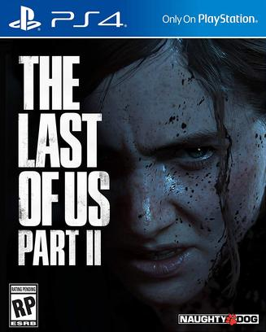

最后生还者 第二部 The Last of Us Part II
这个是我亲自用PS4玩完的第一个游戏。
中途怒喊fk 4次，第一次是Ellie被Abby拿枪指着，第二次是Abby拿枪指着Ellie，第三次是Ellie拿起书包重启旅程，第四次是Ellie继续搞Abby。每次喊fk的时候都想让我弃坑了，但是还是坚持玩下去了。
游戏设计很合理，紧张一段时间之后能缓一段时间，不用过于担心弹尽粮绝。气氛塑造简直了，Rat King（本作唯一boss）那一段太吓人了，浑身鸡皮疙瘩，硬是死了10次。我一定要给这个游戏加上个惊悚的标签。
剧情没那么差，说剧情差的大多没有亲身体验这个游戏。前半剧情是有点吃惊，但时候后半剧情解释了前面的所有。略惋惜的就是末世中，两个杀“父”仇人之间的恩怨全部是队友领便当。
这游戏后劲是有点大，结尾Joel和Ellie的歌声点题，赞！
说过什么
2020-07-22 08:46:28
广播 · 玩过
这个是我亲自用PS4玩完的第一个游戏。 中途怒喊fk 4次，第一次是Ellie被Abby拿枪指着，第二次是Abby拿枪指着Ellie，第三次是Ellie拿起书包重启旅程，第四次是Ellie继续搞Abby。每次喊fk的时候都想让我弃坑了，但是还是坚持玩下去了。 游戏设计很合理，紧张一段时间之后能缓一段时间，不用过于担心弹尽粮绝。气氛塑造简直了，Rat King（本作唯一boss）那一段太吓人了，浑身鸡皮疙瘩，硬是死了10次。我一定要给这个游戏加上个惊悚的标签。 剧情没那么差，说剧情差的大多没有亲身体验这个游戏。前半剧情是有点吃惊，但时候后半剧情解释了前面的所有。略惋惜的就是末世中，两个杀“父”仇人之间的恩怨全部是队友领便当。 这游戏后劲是有点大，结尾Joel和Ellie的歌声点题，赞！
2020-07-01 16:33:24
广播 · 在玩
上周接了个ps4，开始玩。。。这部评分是真的有点低
2018-10-14 12:43:09
广播 · 想玩
最后一次看到是 2026-08-01T11:02:00+10:00 · 豆瓣原页